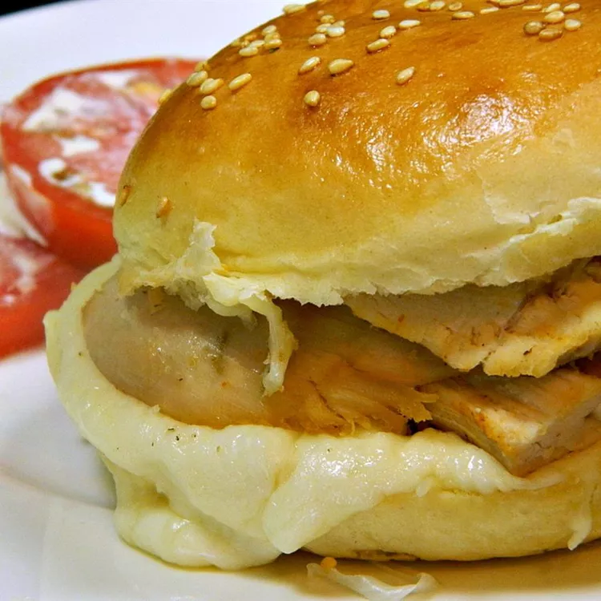

"Heavenly" CHICKEN GARLIC SANDWHICH

Description
Im about tried of these werid looking recipes clogging my VM's digital hard drive, but for real for real this looks like something I would
actually smash down my gullet. mainly because i'm a huge THOT for both garlic and chicken.
ingredents
- 1/2 cup of butter
- 5 garlic cloves minced
- 4 hoagie rolls split
- 2 pounds of cubed chicken breast(probably easier to cube them boys yourself)
- 1 1/2 cups of shredded mozzeralla cheese
directions(I do not know how to spell)
- preheat oven to 365F
- melt butter with garlic in a bowl in 30-second intervals
- place hoagie on tray and butter it up, then evenly place chicken on the bread
- cook in oven for 10-20 minutes, or until cheese is melted